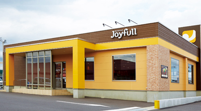
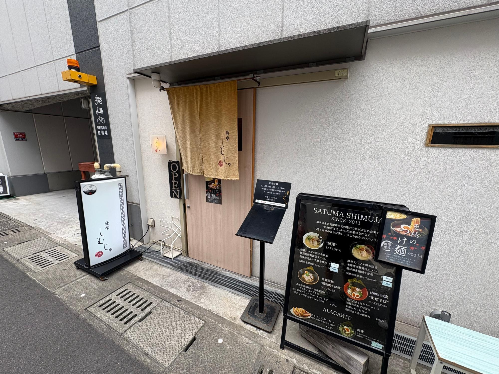
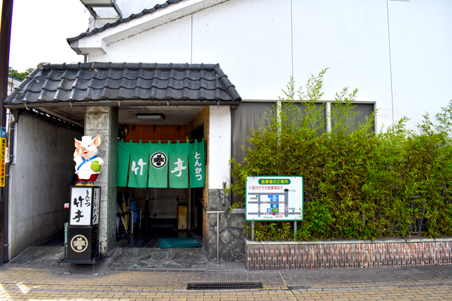

-
ジョイフル
鹿児島を含め九州一円に展開するファミリーレストラン「ジョイフル」は、地域に根差した“日常の食堂”的な存在です。豊富なメニューとリーズナブルな価格で、学生や家族連れ、ビジネスマンまで幅広い層に親しまれています。鹿児島市内にも複数の店舗があり、早朝や深夜まで営業している店舗も多く、気軽に立ち寄れる便利さが魅力。名物と呼べるほどのご当地感はないものの、コスパの高さと安定した味で地元民から根強い支持を得ています。

出典：Joyfull公式サイト
https://www.joyfull.co.jp/owner/ -
薩摩しむじゃ
「薩摩しむじゃ」は、鹿児島ラーメンの中でも濃厚な味わいで知られるラーメン店です。豚骨をベースにしながらも、臭みのないクリーミーなスープが特徴で、ボリュームたっぷりのチャーシューやとろとろの味玉など、ひとつひとつの具材にもこだわりが感じられます。鹿児島中央駅や天文館からのアクセスも良く、地元のラーメンファンはもちろん、観光客のリピーターも多い人気店です。一般的な鹿児島ラーメンよりもややこってり寄りで、食べ応えのある一杯を求める方にぴったりです。

出典：YAHOO!ニュースJAPAN 僕氏＠カゴシマニアックス管理人の投稿
https://news.yahoo.co.jp/expert/articles/7568e05cc85fed21e7151a049ad4d4a58a236252 -
竹亭
鹿児島の名物・黒豚を使ったとんかつを楽しむなら、「竹亭」は外せません。指宿に本店を構えるこの専門店は、鹿児島市内にも支店を持ち、地元民の間で長く愛され続けています。衣はサクッと軽やかでありながら、中はしっとりジューシーな黒豚の旨味が広がる絶品とんかつ。ご飯と味噌汁、キャベツもついた定食スタイルで提供され、ボリューム満点ながら最後まで飽きずに楽しめます。観光地的な華やかさよりも「間違いない味」を求める方におすすめの一軒です。

出典：行きたいが見つかるかごふらサイト
https://www.kagobura.net/shop/shop.shtml?s=1323